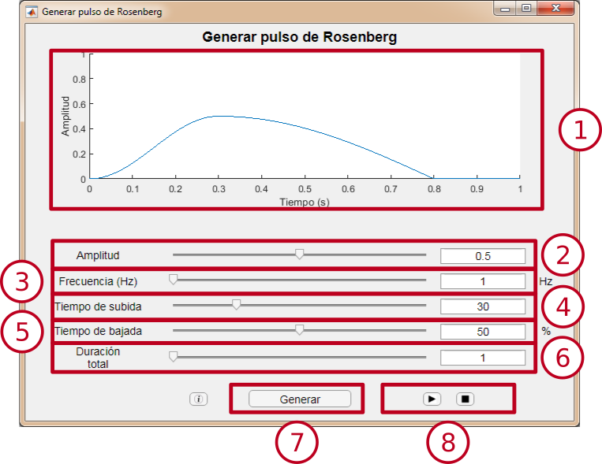
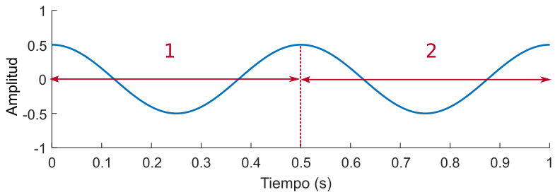

Generar pulso de Rosenberg
Este módulo permite generar un pulso de Rosenberg, con la posibilidad de modificar los parámetros de amplitud, frecuencia, tiempo de subida y tiempo de bajada.
Interfaz

-
Ventana de previsualización: Permite ver la señal que generará el módulo. Se actualiza al cambiar el valor de algún parámetro.
-
Selector de amplitud: Permite variar la amplitud del pulso de Rosenberg entre 0 y 1. El valor se puede cambiar deslizando el cursor o modificando el valor de la caja de texto.
-
Selector de frecuencia: Permite variar la frecuencia del pulso de Rosenberg entre 1 y 20000 Hz. El valor se puede cambiar deslizando el cursor o modificando el valor de la caja de texto.
-
Selector de tiempo de subida: Permite cambiar el tiempo de subida, en relación con el tiempo total del ciclo, entre el 10% y el 90%. El valor se puede cambiar deslizando el cursor o modificando el valor de la caja de texto.
-
Selector de tiempo de bajada: Permite cambiar el tiempo de bajada, en relación con el tiempo total del ciclo, entre el 10% y el 90%. El valor se puede cambiar deslizando el cursor o modificando el valor de la caja de texto.
-
Selector de duración: Permite variar la duración de la señal entre 1 y 30 segundos. El valor se puede cambiar deslizando el cursor o modificando el valor de la caja de texto.
-
Botón "Generar": Abre una nueva ventana de visualización para observar una señal con los parámetros seleccionados.
-
Botones de reproducción: Permiten reproducir o detener la reproducción de la señal.
Pulso de Rosenberg
Es un pulso utilizado en la generación de voz sintética. Con este modelo, se trata de imitar el sonido producido por la glotis al realizar los movimientos de apertura y cierre.
Los parámetros configurables son los siguientes:
-
Amplitud: Valor máximo de la señal.
-
Frecuencia: Número de periodos en 1 segundo, medido en Hz. (Para más información, pulsa aquí).
-
Tiempo de subida: Tiempo que tarda la señal en ascender desde el mínimo hasta el máximo. Representa el tiempo de apertura glotal.
-
Tiempo de bajada: Tiempo que tarda la señal en descender desde el máximo hasta el mínimo. Representa el tiempo de cierre glotal.

Más información
Frecuencia: Número de veces que se repite un ciclo entero de la señal dentro de una unidad de tiempo. Medido en Hercios (Hz) es el número de veces que se repite un ciclo de la señal en 1 segundo.
|
 |
| En este ejemplo la frecuencia es 2 Hz.
|